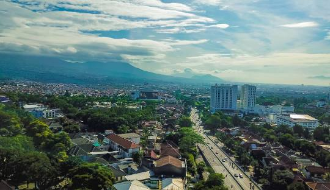
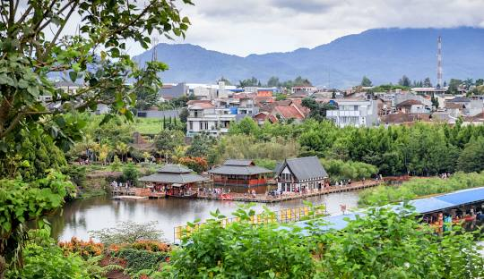
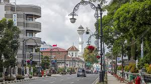
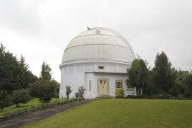
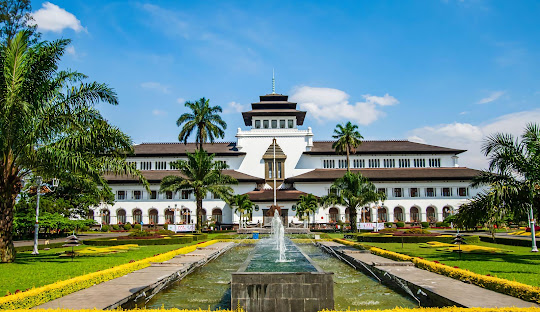

SEJARAH

Awal mula nama Bandung diperkirakan berasal dari kata "bendung" atau "banding", yang merujuk pada bendungan atau danau yang terbentuk akibat aliran lava dari Gunung Tangkuban Perahu.
Kota Bandung memiliki sejarah panjang yang dimulai dari wilayah Tatar Ukur, bagian dari Kerajaan Pajajaran, hingga menjadi kota metropolitan seperti sekarang.
GEOGRAFI

Bandung secara geografis terletak di dataran tinggi di Jawa Barat, dan dikelilingi oleh pegunungan.
WISATA

Observatorium Bosscha terletak di Lembang, dataran tinggi yang sejuk, ideal untuk pengamatan astronomi.
Gedung Sate, sebagai ikon kota Bandung, berada di pusat kota, dekat dengan berbagai fasilitas dan pusat pemerintahan.
BOCHA

Observatorium Bosscha, yang sekarang berada di bawah naungan Institut Teknologi Bandung (ITB), didirikan atas inisiatif Karel Albert Rudolf Bosscha pada tahun 1923. Observatorium ini merupakan observatorium astronomi modern pertama di Asia Tenggara.
GEDUNG SATE

Gedung Sate, yang terletak di Bandung, Jawa Barat, adalah sebuah bangunan bersejarah yang awalnya dibangun sebagai kantor pemerintahan Hindia Belanda pada tahun 1920-an. Bangunan ini dikenal dengan ciri khas atapnya yang menyerupai tusuk sate dengan enam ornamen berbentuk buah.